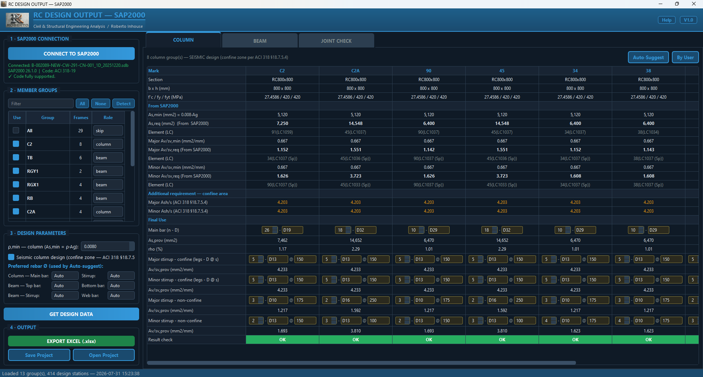
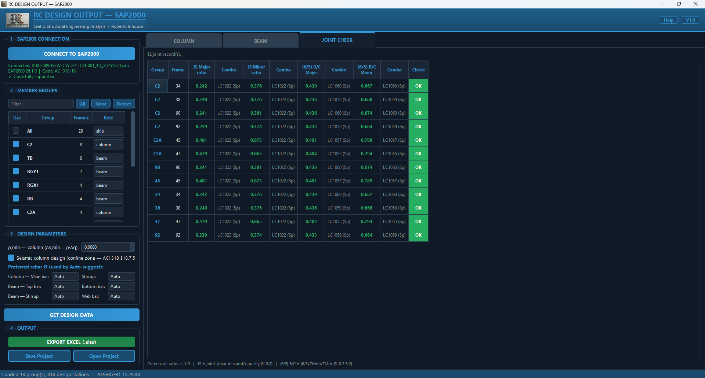
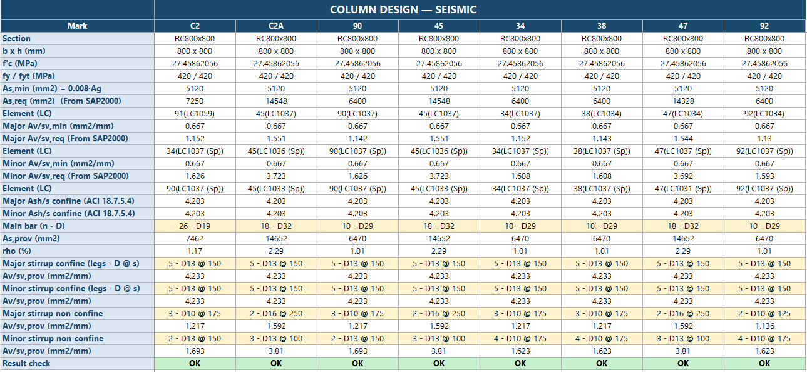
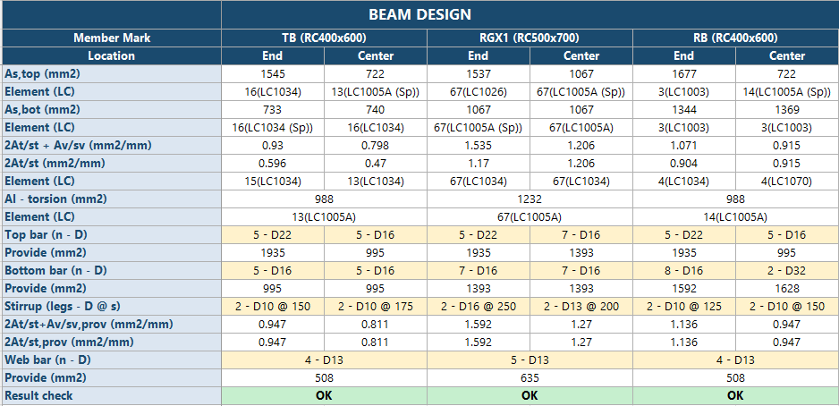

RC Structural Design
RC Design Output — SAP2000
Connects live to a running SAP2000 model, pulls concrete frame design results and turns them into a complete rebar schedule per member group — with live OK/NG checking and a polished Excel report.

⤢


Key features
- Live SAP2000 connection
- Section size, f'c, fy, fyt, cover...
- Joint check: joint shear and (6/5) beam/column capacity ratios for seismic frames
- <b>Auto rebar suggestion</b> the moment data arrives
- Excel export (.xlsx) mirroring the familiar legacy sheet layout, including raw station data
- Save/open project (.rcdproj) — tweak rebar and re-export later <b>without SAP2000 running</b>
System requirements
Windows / SAP2000